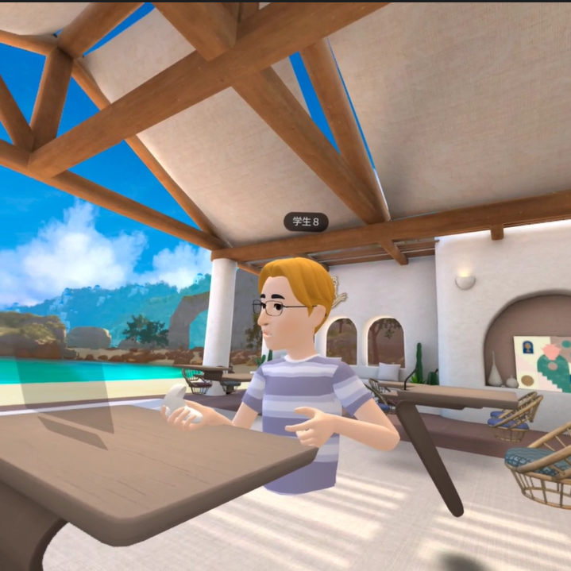

第2週目
2-1 １週目のレポートをHTMLで作る
１週目のレポート
1.内容
Scratchを使ってプログラミングを組み立てた感想とホームページを作成した感想を既存のデータをベースに書き換えてレポートを作成する
2.感想
課題がGitHubを使ってプログラムを書き換えていくことなので触れる機会が多くなり経験を積むことができたので良かったです。
慣れてきて作業するペースが速くなるのをうれしく思いながら作業しました。何回も書き換える画面を見ているとパターンがあることに気づくことができて、
なんとなくこの記号がどの部分でどんな役割を持っているのかわかるようになりました。
2-2 機械学習体験
1.内容
Teachable Machineをいうウェブのツール環境を使って人工知能技術の一部を体験する。グーとチョキとパーの三つの画像をそれぞれ
150枚ほど機械学習させリアルタイムで分類される様子を体験する。
2.感想
かんそうかんそう
2-3 VR（バーチャルリアリティー：Virtual Reality）会議室の体験

1.内容
二人ペアで行い、一人がVRゴーグルを装着し、Workroomsというアプリケーションで仮想会議室でメタバース体験をする。
もう一人はミラーリングを設定し、パソコンから見れるようにする。会議室の様子をキャプチャして自分のメールに送る。
画像を入手したら交代してそれぞれメタバース体験をする。
2.感想
メタバース空間に入ってみて、思っていたより自分がそこにいる感じがあってゲームとかしたらよりプレイ画面がリアルに感じられて面白いだろうなと思いました。特に会議室ではホワイトボードにかける機能があってコロナの影響でオンライン授業になったときにメタバース空間で授業できたら学校に行っている感覚があって集中できそうだなと思いました